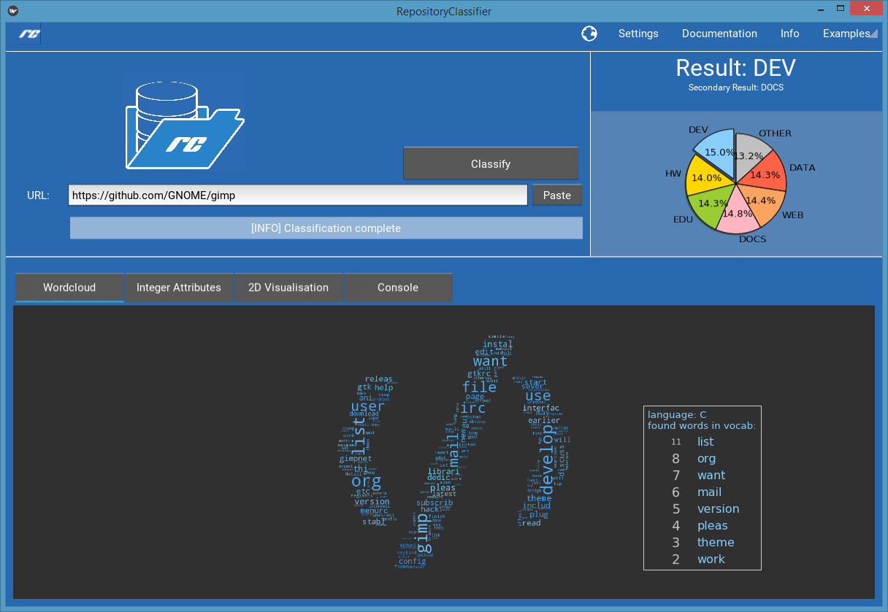

Welcome to GitHub Classifier’s documentation!¶
This project was created in course of the InformatiCup 2017, hosted by the German Association for Computer Science. The goal is to provide a detailed overview over the implementation of a software system which was built for the automatic classification of GitHub-Repositories.
Contents:
